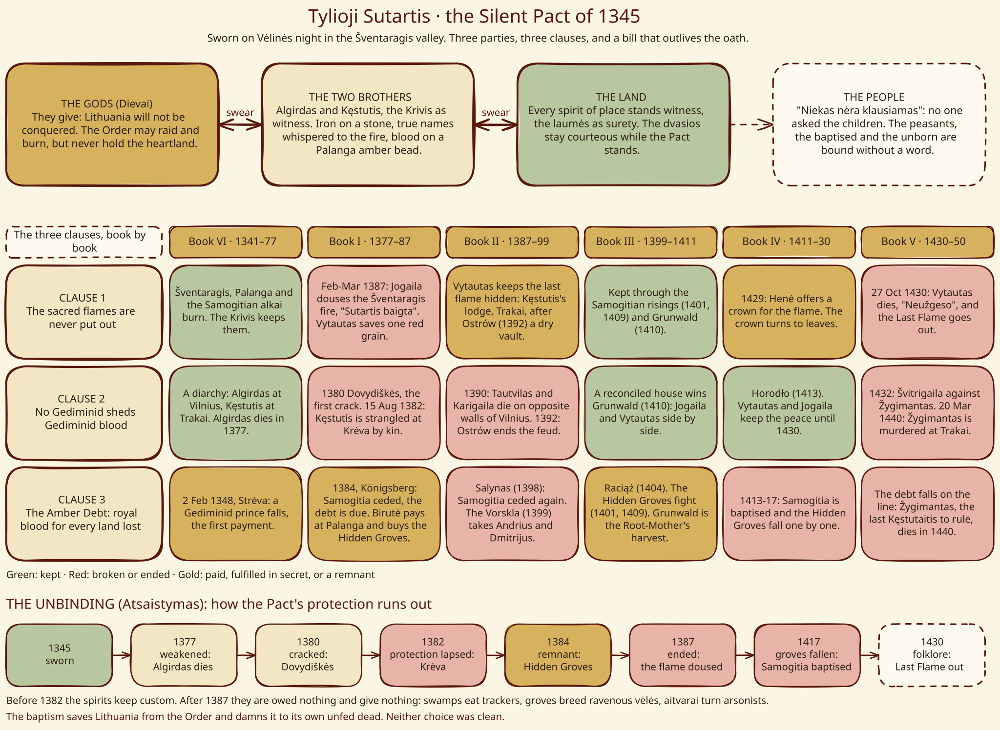
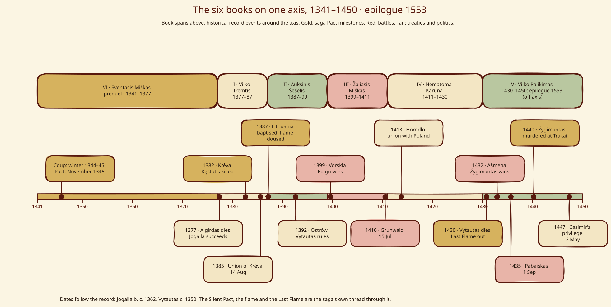

Maps & diagrams¶
Diagrams of the saga’s structure.
The three layers of power¶

The three layers of power¶
Gods are facts of nature, Forces are gods grown hungry, and Kalba is the mortal craft of asking. Offerings rise; answers, claims and costs come down. The Three Laws bind mortals only. See Cosmology and Root-Mother.
The House of Gediminas¶

Gediminid family tree¶
Record dates, with the winter 1344–45 coup distinguished from the saga’s Pact of November 1345 and its breach at Krėva in 1382 marked on the tree. See Gediminaičiai.
The Silent Pact¶


The Silent Pact: parties, clauses and the Unbinding¶
Three parties and a fourth who was never asked; three clauses followed book by book; and the Unbinding that runs from Krėva to the last flame. See Tylioji Sutartis.
Artifact custody¶

Artifact custody timeline¶
Five artifacts, 1345 to 1450, with the silver wolf carried forward as an heirloom in 1553. See Sidabrinis vilkas.
The series on one axis¶


Six books on one 1341–1450 timeline, with the 1553 epilogue marked¶
The six books laid over the record: Book VI first, then I to V, with the events that carry the story. See the full Timeline.
The craft at a glance¶

The craft at a glance¶
The three layers, the practitioner groups, the five elements and the element-specific immediate costs and separate deferred debts on one page. See Lore of the Craft.